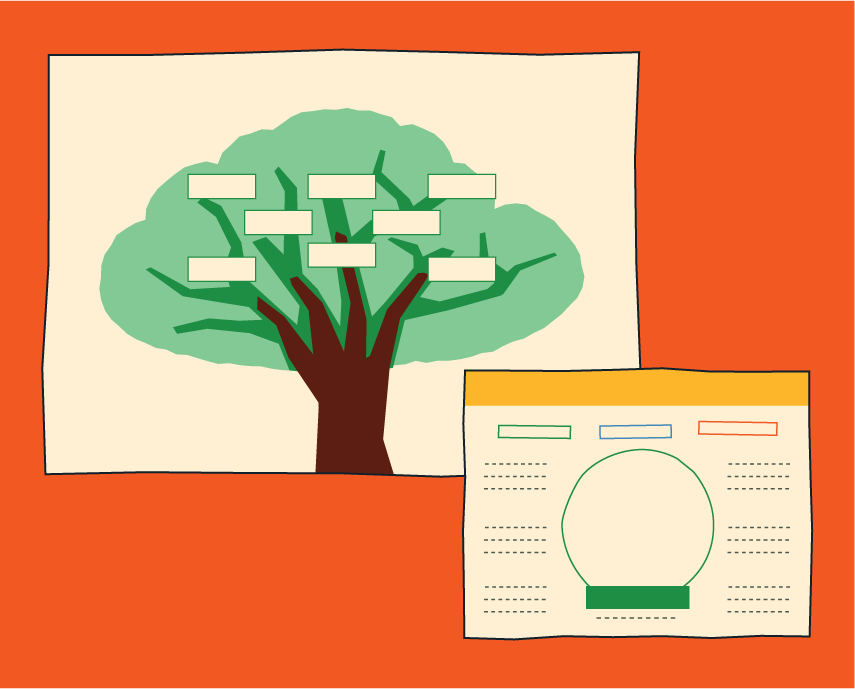

Actividad 2: Personajes

Propósito
Crear personajes a partir de ideas generadas colectivamente, explorando sus características, intereses, emociones y relación con el tema trabajado.
Preparación

Tiempo
90 minutos

Materiales
- Árbol de Ideas
- Papelógrafo
- Fichas de personajes
- Lápices y colores
- Plastilina
- Recurso web

Antes de comenzar
Prepara el Árbol de Ideas con palabras asociadas a la temática.
Desarrollo
Creemos un personaje colectivamente
Todos participan. Cada estudiante puede aportar con una característica dando ideas y el docente dibuja en un papelógrafo frente a la clase.

Preguntas de mediación
- ¿Nuestro personaje es grande, pequeño o mediano?
- ¿Qué forma tienen sus ojos, nariz, boca, orejas?
- ¿Tiene cabello largo o corto?
- ¿Cómo es su vestimenta?
- ¿Qué accesorios tiene (sombrero, mochila, alas, cuernos)?
Árbol de Ideas

Contextualicemos
Presenta el Árbol de Ideas y explica que las palabras serán utilizadas como inspiración para crear personajes. Los estudiantes deben elegir 3 palabras.
Cada uno crea su propio personaje
Entrega a cada integrante del grupo una ficha de personaje e invítalos a crear el suyo usando las tres ideas que eligieron del Árbol de Ideas. Indícales que respondan las preguntas de la ficha y dibujen cómo será su personaje en el espacio correspondiente.
Observemos
Asegúrate de que las palabras seleccionadas del Árbol de Ideas se utilicen para definir las características del personaje. Verifica que los estudiantes respondan las preguntas de la ficha de personaje.
Modelemos en plastilina
Proporciona plastilina e indica a los estudiantes que hayan terminado de dibujar pueden pasar a modelar su personaje.
Compartamos
Invita a los estudiantes a presentar su personaje al grupo, contando su nombre y una de sus características.